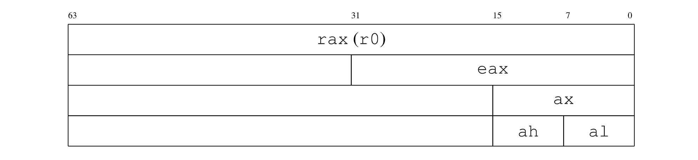

“Low-Level Programming” 读书笔记（一）
无意间找到的一本好书，主要介绍 X86_64 体系下的 C 和汇编。其中第二章关于 “C Programming Language” 的内容就简单略过了。
Chapter 1：计算机基础架构
- （Page：4）冯诺依曼体系：强健且易于编程。拥有一个 CPU 处理单元和内存单元，被连接到公用的总线上。CPU 内部分为控制单元（Control Unit）与算数逻辑单元（ALU）以进行逻辑控制和算数计算，而内存单元则用于存储数据。被编码的指令和数据均存放于内存中，内存按字节被分为一个个单元。指令以顺序的形式被依次执行除非特殊的 jump 指令被执行。
- （Page：5）内存状态和寄存器的值从程序员的视角描述了某一时刻的 CPU 状态。每一条机器指令都对应着不同的内存和寄存器状态。
- （Page：6）长模式：在 X86_64 处理器架构中，当处于长模式（Long Mode）时，64 位应用程序（或者是操作系统）可以使用 64 位指令和寄存器，而 32 位程序将以一种兼容子模式运行。不在长模式下运行时，处理器支持真实模式和保护模式两个子模式，在这两个模式下的 X86_64 处理器与 X86_32 处理器运行方式完全相同。
- （Page：6）Intel 64 基于冯诺依曼的扩展：
- 寄存器：直接存在于 CPU 上的存储单元；由于不需要经由总线调度，因此存取速度很快，通常只需要几个 CPU 周期；
- 栈：即进程虚拟地址空间中的栈结构，rsp 寄存器指向栈顶位置。用于保存当前栈帧中使用的局部变量、参数等；
- 中断：可用于改变程序的执行顺序。常见的中断场景：外部设备的响应、运行时异常（除零）、无效指令、尝试以非特权模式执行特权指令等；
- 保护环（分级保护域）：一般只使用 ring0 和 ring3。ring0 可以执行所有的 CPU 指令。ring3 一般是用户应用程序所在的层级，只能使用最安全的 CPU 指令；另外的 ring1 \ ring2 一般不使用；
- 虚拟内存：一般指进程独立的虚拟地址空间（VAS）。可以隔离进程运行环境，并且借由分段、分页技术，可以很好地管理进程的内存使用；

- （Page：8）程序访问的局部性：一个程序 80% 的执行时间花费在仅 20% 的代码中。分为时间局部性 —— 近期被访问的信息，可能在短时间内被访问，和空间局部性 —— 与被访问地址相邻的地址上信息可能会在短期内被再次访问。基本思想：对大概率事件赋予它优先的处理权和资源使用权，以获得全局的最优结果。
- （Page：9）X86_64 下的通用寄存器（16 个 64 位的整型寄存器）：
- r0 (rax)：算术指令中使用的一种“累加器”。通常也作为系统调用的序号，以及返回值的容器；Accumulator；
- r1 (rcx)：用于循环控制；Cycle；
- r2 (rdx)：在输入/输出操作期间存储数据。通常也作为系统调用中参数传递寄存器（第三个参数）；Data；
- r3 (rbx)：基址寄存器，用于存放早期处理器模型中的基址；Base；
- r4 (rsp)：类似 i386 下的 esp，指向进程栈的栈顶；Stack；
- r5 (rbp)：类似 i386 下的 ebp，栈帧寄存器，默认指向旧的 rbp 的值；Stack Base；
- r6 (rsi)：字符串操作命令中的源索引；通常也作为系统调用中参数传递寄存器（第二个参数）；Source Index；
- r7 (rdi)：字符串操作命令中的目标索引；通常也作为系统调用中参数传递寄存器（第一个参数）；Destination Index；
- r8 - r15：通常用于存储临时变量；
- （Page：10）当使用通用寄存器名时，可以为其添加后缀，以寻址其一部分区域：
- d：即 double，寻址其低 32 位（如：r0d）；
- w：即 word，寻址其低 16 位（如：r3w）；
- b：即 byte，寻址其低 8 位（如：r7b）；
对于 r0-r7 我们一般使用其别名来表示；而 r8-r15 则直接使用数字索引的形式来表示。我们也可以通过别名来访问 r0-r7 的一部分区域，对于 rax / rbx / rcx / rdx 来说，有着统一规则的表达方式：

对于 rsi / rdi / rsp / rbp 来说，有着另外的表达方式（规则相同）：

- （Page：12）rip 寄存器：程序员可以访问 rip 寄存器。它是一个 64 位寄存器，始终存储要执行的下一条指令的地址。分支指令会对其进行修改。因此，每次执行任何指令时，rip 都会存储下一条将要执行的指令地址。另一个可访问的寄存器称为 rflags：它存储着反映当前程序运行状态的标志。例如，最后一条算术指令的结果是是否是负数？是否发生了溢出？等。它的部分寻址为：eflags（低 32 位）和 flags（低 16 位）。其内部的标志位如下所示：

- （Page：12）xmm0 - xmm15 寄存器：用于进行 SIMD 以及浮点数运算。
- （Page：13）系统寄存器（被 OS 特殊使用）：
- cr0 / cr4：存储与不同处理器模式和虚拟内存有关的标志；
- cr2 / cr3：用于支持虚拟内存；
- cr8（tpr）：用于优化中断机制；
- efer：标志寄存器，用于控制 CPU 模式和扩展；
- idtr：存储中断描述表的地址；
- gdtr / ldtr：存储描述符表的地址；
- cs / ds / ss / es / gs / fs：段寄存器，主要用于实现分段机制，其中一部分仍用于实现特权模式；
在长模式下，当前保护环等级存储在寄存器 cs 的最低两位中，并且仅在处理中断或系统调用（需要进入内核模式）时才能更改。
- （Page：15）关于栈的说明：
- 没有“空栈”的概念。无论如何都可以从栈上 pop 一个值，但获得的值可能没有意义；
- 栈向低地址方向增长；
- 几乎所有类型的操作数都被视为带符号整数，因此会发生符号位扩展（有符号数扩展符号位，即 1；无符号数扩展 0）；
- 大多数支持栈的体系结构都使用相同的原理，即栈顶位置由某些寄存器定义，但不同之处在于各个地址的含义。在某些体系结构上，寄存器的值是下一个被推入元素的地址；在其他情况下，寄存器的值是已经被压入堆栈的最后一个元素的地址；
- （Page：16）PUSH 指令：

- push r/m16：将一个 16 位的寄存器的值或者从内存中取得的 16 位数字推入当前的栈中；
- push CS：将段寄存器 cs 的值推入栈中；
- push imm16：将 16 位的立即数推入栈中；
Chapter 2：汇编语言
- （Page：18）Unix 将一切资源均视为“文件”。从广义上讲，文件就是看起来像字节流的任何东西。
- （Page：19）通常来讲，汇编语言不区分大小写，但是标签名称（global _start）和段名称（section .data）区分大小写。
- （Page：19）伪指令（非真实的 X86_64 指令集指令）DB（Declaring Initialized Data）家族，用于定义以字节形式表示的初始化数据：
- db：bytes；
- dw：2bytes；
- dd：4bytes；
- dq：8bytes；
db 0x55 ; just the byte 0x55
db 0x55,0x56,0x57 ; three bytes in succession
db 'a',0x55 ; character constants are OK
db 'hello',13,10,'$' ; so are string constants
dw 0x1234 ; 0x34 0x12
dw 'a' ; 0x61 0x00 (it's just a number)
dw 'ab' ; 0x61 0x62 (character constant)
dw 'abc' ; 0x61 0x62 0x63 0x00 (string)
dd 0x12345678 ; 0x78 0x56 0x34 0x12
dd 1.234567e20 ; floating-point constant
dq 0x123456789abcdef0 ; eight byte constant
dq 1.234567e20 ; double-precision float - （Page：20）伪指令 TIMES，用于重复多次执行某指令：
global _start
section .text
_start:
mov rax, 1
mov rdi, 1 ; stdout；
mov rsi, message ; buffer；
mov rdx, 64 ; length；
syscall
mov rax, 60
xor rdi, rdi ; clean rdi and pass 0 to exit() system call；
syscall
section .rodata
message:
times 10 db 'ABC' ; message 符号的内容会成为一个整体；
times 64-$+message db '$' ; times 伪指令可以接受表达式作为第一个参数；$ 为特殊符号表示当前语句开头的汇编位置；$$ 表示当前段开头处的汇编位置；
db 10- （Page：20）X86_64 下系统调用的传参寄存器：rdi / rsi / rdx / r10 / r8 / r9；最多传递 6 个参数。
- （Page：22）一个通过“位移 sar”和“逻辑与 and”来输出数字值的例子：
section .data
codes:
db '0123456789ABCDEF' ; char symbols；
global _start
section .text
_start:
mov rax, 0x1122334455667788 ; 64bits；
mov rdi, 1 ; "stdout"；
mov rdx, 1 ; length of chars to print；
mov rcx, 64 ; counter for 16 times iteration;
.loop:
push rax ; rax -> stack;
sub rcx, 4 ; rcx <- rcx - 4；
sar rax, cl ; (Shirt Arithmetic Right) rax >> (cl times)；
and rax, 0xf ; for iteration turns > 0
lea rsi, [codes + rax] ; (Load Effective Address) map to char*;
mov rax, 1 ; set system call to write()；
push rcx ; save rcx;
syscall
pop rcx
pop rax
test rcx, rcx ; test if zero, will change SF, ZF, PF accordingly；
jnz .loop ; loop if not zero；
mov rax, 60 ; exit；
xor rdi, rdi
syscall- sar 为算数右移，会进行符号位扩展；shr 为逻辑右移，扩展为填充 0；
- .loop 为本地标签，隶属于某个全局标签之下（比如这里的 _start），因此其全名为 _start.loop，我们可以在整个程序中用这个名称进行索引；
lea rsi, [codes + rax]使用了间接寻址；
- （Page：24）lea 与 mov 的区别（大部分情况下 mov 操作的是值，lea 操作的是地址）：
- mov rsi, codes：codes 的地址存放到 rsi；
- mov rsi, [codes]：codes 地址开始的 8 字节内存内容存放到 ris；
- les rsi, [codes]：codes 的地址存放到 rsi；
- mov rsi, [codes + rax]：codes + rax 地址开始的 8 字节内存内容存放到 ris；
- lea rsi, [codes + rax]：codes 的地址加 rax 值存放到 rsi
- （Page：24）常用的跳转指令：
- 无条件跳转：jmp；
- 有条件跳转：jz / jnz / ja / jb / jg / jl / jae / jle（其中 ja / jb 用于 unsigned 数字，jg / jl 用于 signed 数字）；
其中条件跳转指令依赖于 rflags 寄存器的值，这些值会被诸如 test / cmp 等指令改变。
global _start
section .rodata
message:
db 'YHSPY', 10
section .text
_start:
mov rax, 1
cmp rax, 2
jl yes ; jump if rax less than 2；
mov rbx, 0
jmp ex
yes:
mov rax, 1
mov rdi, 1
mov rsi, message
mov rdx, 6
syscall
mov rax, 60
xor rdi, rdi
syscall
ex: